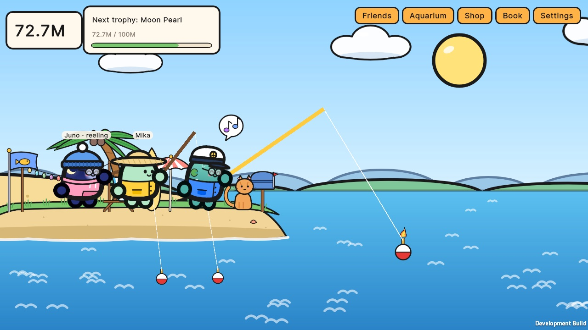
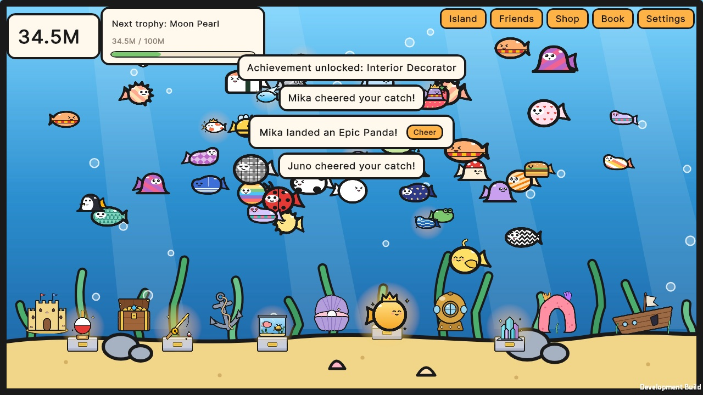
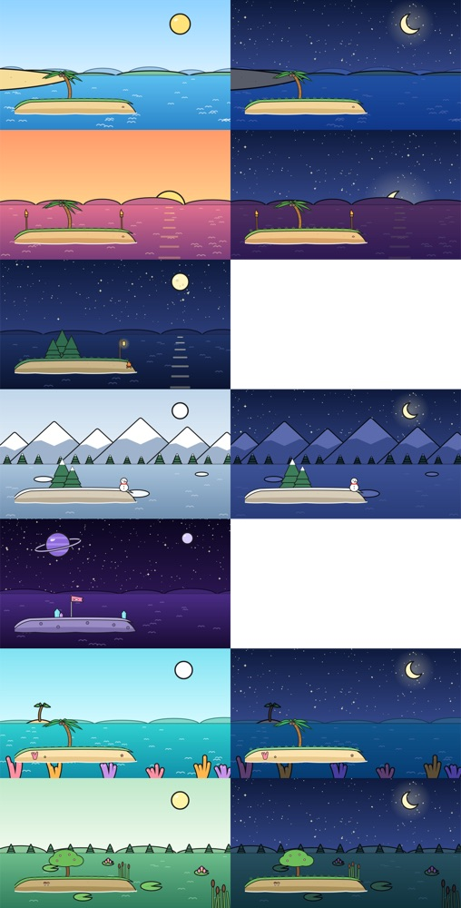

The current take on the same idea: a cosy idle fishing game in Unity 6.3, headed for Steam. You fish off an island, the catches swim in your aquarium, and the whole thing ticks along whether or not you are paying attention. The anglers are the same round little characters that turn up in my other projects, which was not planned so much as admitted.

The core is deliberately plain C# with no engine types in it — one fishing state machine, the mash and reel minigames, and an economy covering rolls, values, boosts, the ladder and aquarium capacity — so all of it runs under test without the game running. The economy's numbers live in a json file shared with a pacing simulation, which means the design document and the game cannot quietly disagree about how long anything takes.
On top of that sits the Steam layer: item drops after a won fight, selling, a shiny exchange, achievements and leaderboards, with permanent item ids derived from the item names so they survive a catalogue reshuffle. Multiplayer is in too — sessions, a mash-off mode and lobby transport over Steam, plus friends appearing on your island and cheering each other's catches.
Most of the recent work has been the parts that decide whether people stay: a day/night cycle across islands that each have their own weather and scenery, decor and photo mode for the aquarium, outfits and dyes, a fish record book, petting and feeding. Underneath that, the unglamorous half — controller and keyboard navigation, ultrawide support, UI scaling, a rotated local error log, save integrity tests and a soak mode that samples memory over a long fast session.
